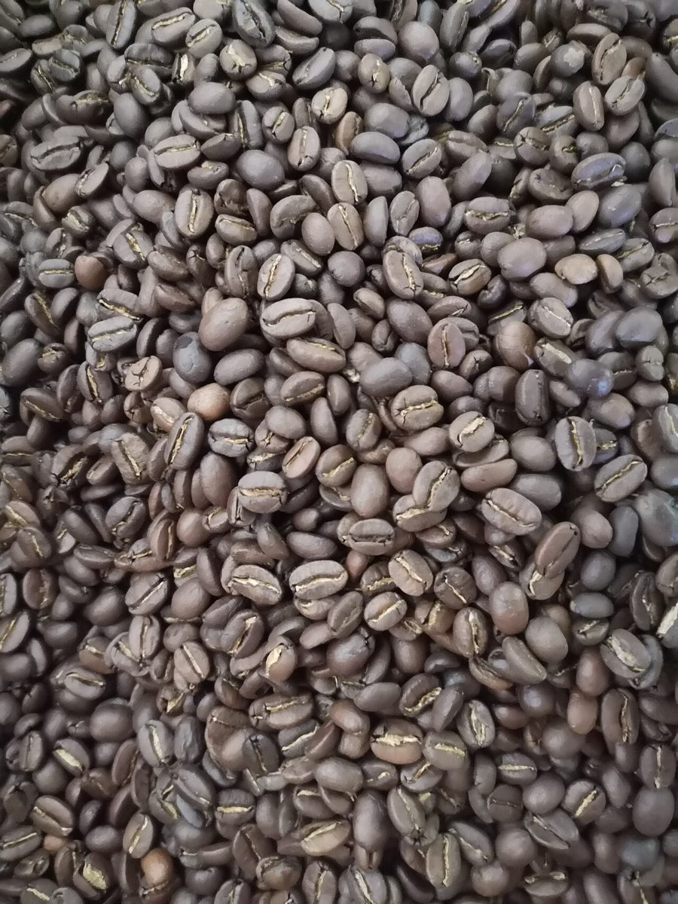
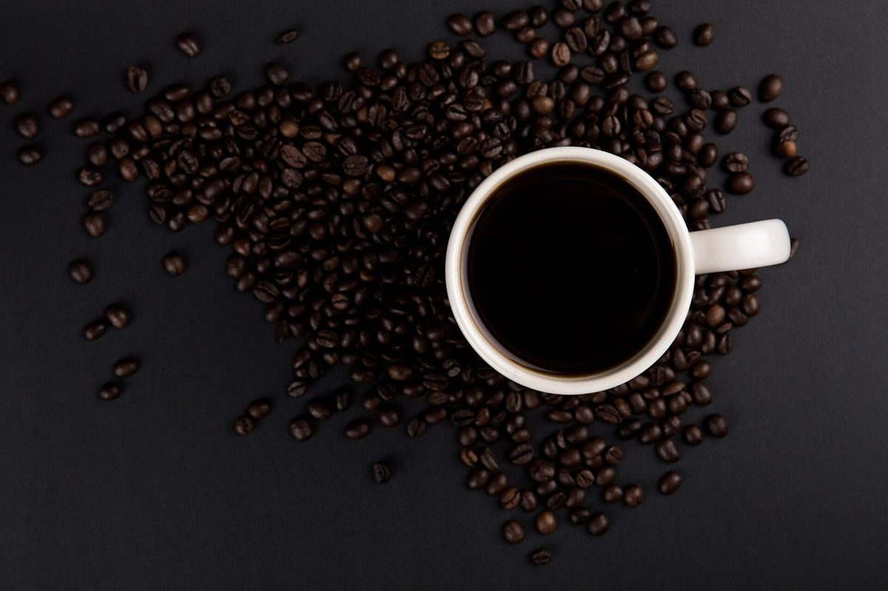
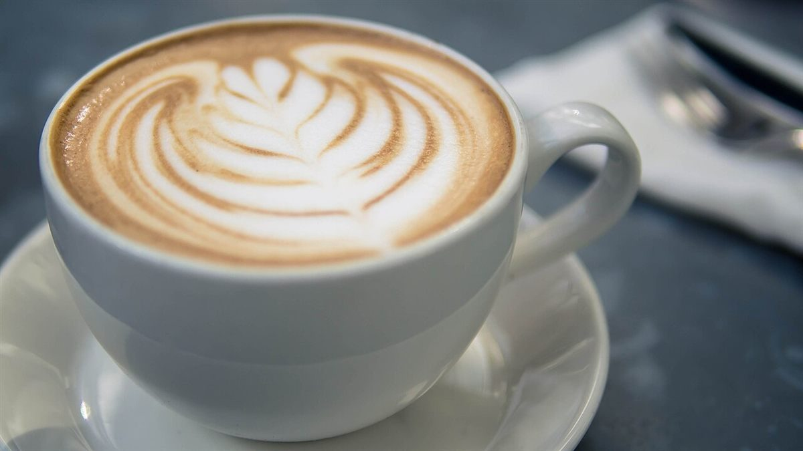
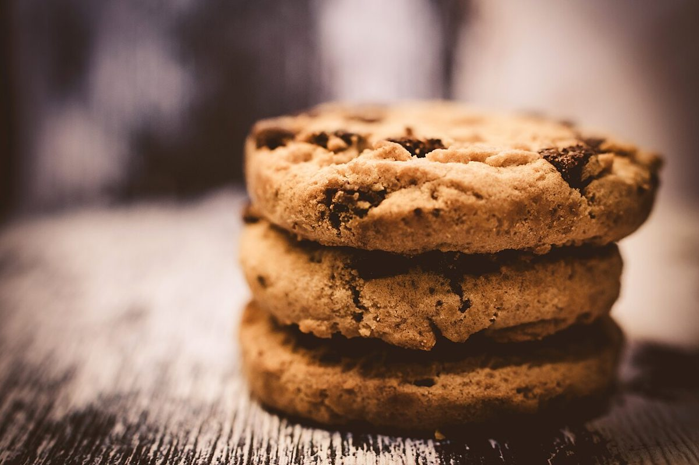
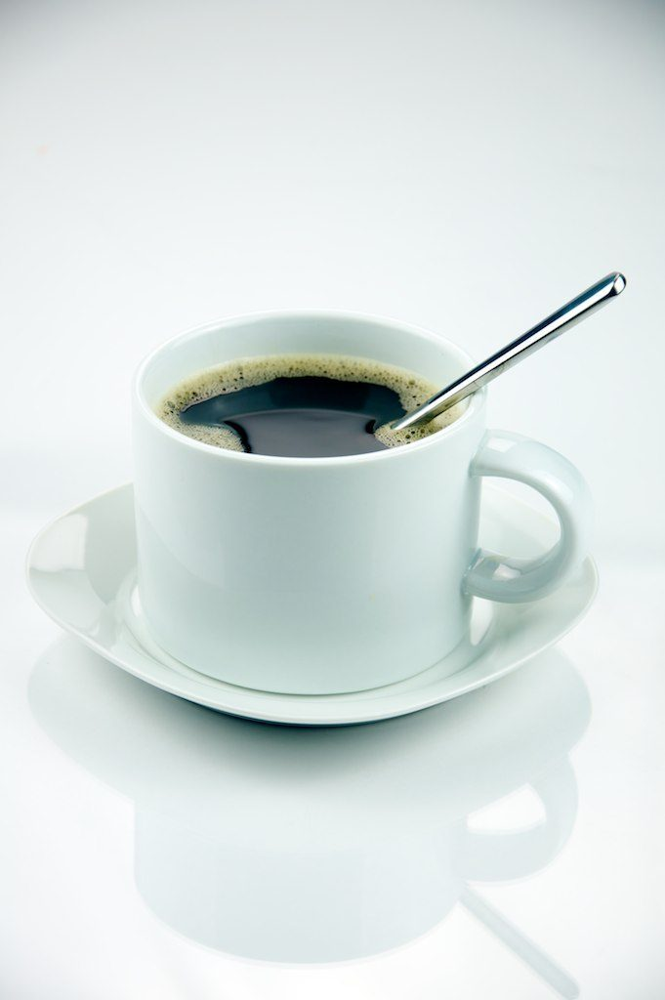

制作側の連想
「and」を、ベン図の重なりに。
店名の「and」の意味や由来は分かりません。制作側は「and」という語から、二つの円が重なるベン図の真ん中を連想しました。そこで、このサイトは各ページの冒頭に「ふたつの円と、その重なり」を置き、写真も「コーヒー and なにか」の二枚一組にしています。これは制作側の連想で、お店の理念・由来とは無関係です。
二枚一組(イメージ)
コーヒー and …
写真はお店のものではなく、国外または撮影地不明のフリー素材です。お店で提供しているものを示すものではありません。


豆 and 一杯(イメージ)


ラテ and クッキー(イメージ)


白いカップ and クロワッサン(イメージ)
ご案内
お店のこと(確認できたものだけ)
| 所在地 | 〒728-0017 広島県三次市南畑敷町141-1 |
|---|---|
| 電話 | なし |
| 営業時間 | 準備中 |
| 定休日 | 準備中 |
| ご予約 | 準備中 |
| 駐車場 | 準備中 |
| SNS | Instagram @andcoffee.miyoshi |